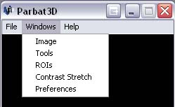
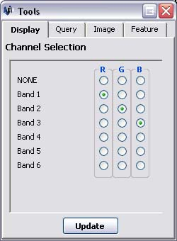

Assigning Imagae bands to Display bands
Displaying Different Bands
Parbat 3D allows you to open image files that contain multiple different image bands. By default, Parbat 3D
displays the image using the first three bands of the image, which normally correspond to the red, green and blue
components of visible light. To change which bands are displayed, follow these steps:
- If the Tools Window is not already visible, click on the 'Window' menu followed by 'Tools'.

- Click on the 'Display' tab within the Tools Window.

- Underneath the 'R' (red) display channel column, click a radio button that lines up with the image band that
you want to display as the red channel. The default is 'Band 1'.
- Underneath the 'B' (blue) display channel column, click a radio button that lines up with the image band that
you want to display as the red channel. The default is 'Band 2'.
- Underneath the 'G' (green) display channel column, click a radio button that lines up with the image band that
you want to display as the red channel. The default is 'Band 3'.
- Click 'Update' to save the changes. The Image and Overview windows will be updated to display the chosen
bands.